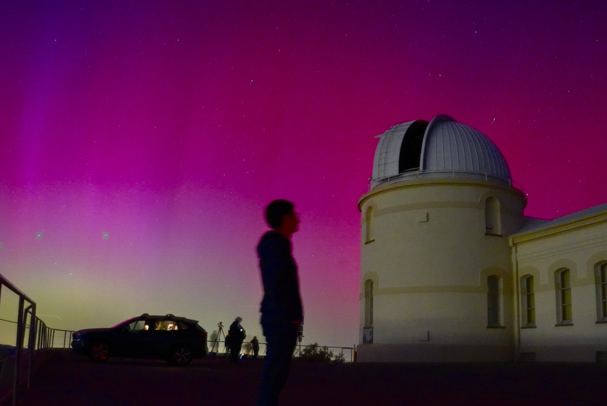

About


Alongside astrophysics, I study and minor in History of Consciousness, which is a combination of philosophy, critical theory, and political thought (+much more), helping me sit with complex, open-ended questions and think more clearly.
After my Ph.D., I plan to become a professor of astrophysics. Research is the center of that ambition, but so is mentorship. In addition to my research, I am heavily involved in outreach. I am especially motivated and determined to support students from underserved communities and help break barriers that keep brilliant people out of science. In practice, this includes tutoring physics and math for free to student from underprivileged backgrounds, mentoring high school students from underserved communities and helping them with college applications, and writing online posts and articles about physics and astronomy in Persian (> half a million views last year) to help break language barriers because access to science should not be yet another thing determined by the privilege of where you were born and what language you grew up speaking. <\p>
I grew up in the beautiful city of Esfahan, Iran, a city of bridges, tilework, and an immense level of hospitality. There are many misconceptions about Iran that are shaped by politics, but honestly, Iranians are among the warmest, most generous people I know. Esfahan is worth seeing for yourself.